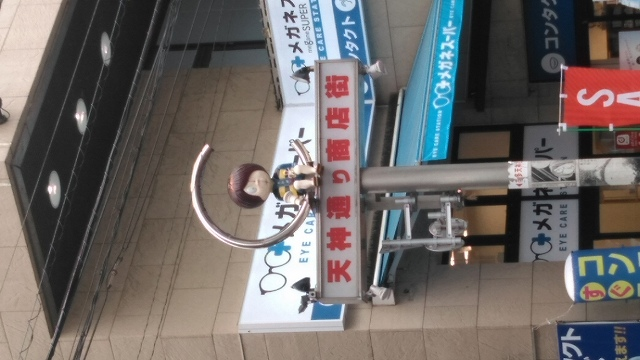
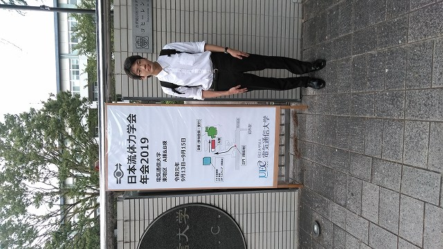
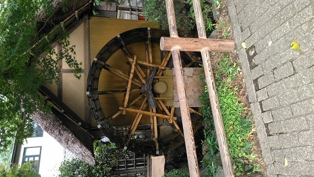
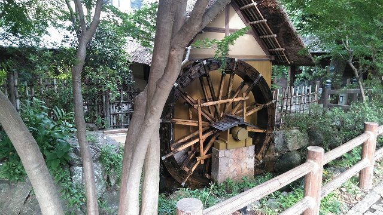
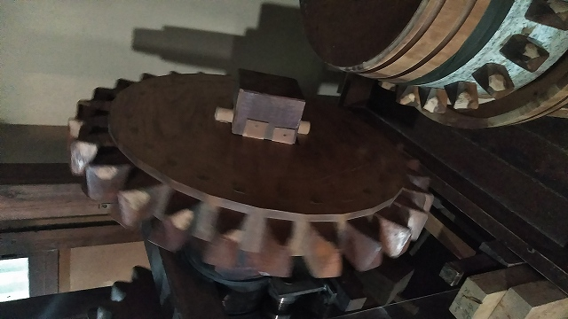
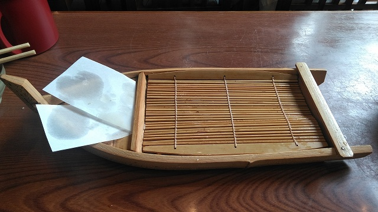

| ・ 日本流体力学会 年会2019@電気通信大学 (R01.09.13-15) | |||
去年に引き続いて、M1のI田さんが、日本流体力学会 年会2019で流体計測の研究で「周期流における振動翼のピッチング角度と周波数が推力と揚力に与える影響」を発表しました。 2年前の混相流は雨がひどくて大変でした。今回はひとりで参加。写真もI田さんです。質疑で研究の理解が深まって、今後の方針にも良い影響があったとのこと。 |
|||
|
忘れ物！駅前の電気屋で購入 |

鬼太郎通り | ||
|

撮って貰ったそうです |

深大寺に移動 | ||
|

水車 |

機械なら歯車に惹かれる | ||
|

美味しかったそうです |
|||